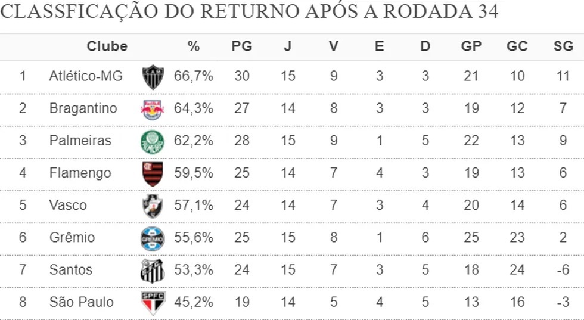

Nome de Vanderlei Luxemburgo ganha força no Cruzeiro
A informação foi divulgada inicialmente pela Rádio Itatiaia e confirmada pelo ge. Nesta temporada, Luxemburgo comandou o Corinthians, na disputa do Campeonato Brasileiro, Copa do Brasil e Sul-Americana, substituindo Cuca. Com uma campanha bastante irregular, ele deixou o clube depois de empatar com o Fortaleza, no jogo de ida das semifinais da competição internacional.
Ler mais

Classificação do returno
Atlético é líder, Palmeiras passa Flamengo, e Vasco supera Grêmio e Santos. Cruzeiro entra o Z-4 do segundo turno com o crescimento do Coritiba, que agora é o 16º. Como os times têm número de jogos diferentes, a classificação está por aproveitamento percentual de pontos
Ler mais
Como Abel Ferreira pensa o Palmeiras em reta final do Brasileiro
Rony despencou no gramado aos prantos e Abel Ferreira - na beira do campo - abriu um sorriso largo ao ver as redes da Arena Barueri estufarem pela terceira vez. Era a vitória do Palmeiras, por 3 a 0, sobre o Internacional, para alçar o Verdão à liderança do Brasileiro. A quatro rodadas do fim, a equipe executa a sua própria receita: autoconfiança e samba.
Ler mais
Palmeiras passa a ser favorito a ficar com a taça
Desde que o Espião Estatístico começou a calcular as chances de título do Campeonato Brasileiro 2023 na virada do turno, a 34ª rodada é a primeira em que o Botafogo perde o favoritismo. Agora, o Palmeiras está com 44,30% de chances de ser campeão contra 27,21% do Alvinegro carioca. A equipe alviverde se recuperou da derrota para o Flamengo no meio de semana e venceu bem o Internacional na Arena Barueri.
Ler mais
Suárez volta a ser convocado pela seleção do Uruguai
A federação de futebol do Uruguai (AUF) divulgou nesta segunda-feira a lista de 24 jogadores convocados pelo técnico Marcelo Bielsa para os próximos jogos pelas eliminatórias sul-americanas da Copa do Mundo de 2026, contra Argentina e Bolívia. O atacante Luis Suárez voltou a ser chamado.
Ler mais
Romero pode custar mais de R$ 19 milhões ao Corinthians
Quase dez anos depois, a primeira contratação de Ángel Romero ainda rende dor de cabeça ao Corinthians. O clube está sendo cobrado na Justiça por uma dívida relacionada ao negócio, que pode acabar custando mais de R$ 19 milhões.
Ler mais